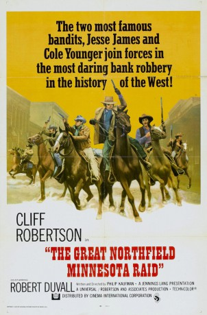

#3120 Der Große Minnesota Überfall
Alternativ: The Great Northfield Minnesota Raid
 
 IMDB-Wertung: 6.2 / 10
IMDB-Wertung: 6.2 / 10  Metascore: 0
Metascore: 0 
1876: Cole Younger (Cliff Robertson), Jesse James (Robert Duvall) und ihre Gang helfen Kleinbauern, die durch den Bau der Eisenbahn ruiniert wurden. Nun boykottieren die Verantwortlichen auch noch eine Amnestie der Outlaws. Schließlich wird ein Überfall auf die Bank in Northfield/Minnesota der Bande zum Verhängnis… Robertson († 2011), den man zuletzt als Ziehvater von "Spider-Man" Tobey Maguire sah, ist ein charismatischer Anführer, Duvall sein brutales Gegenstück.
Jahr: 1972
Dauer: 91 Minuten
FSK: 16
Land: USA Studio: Universal PicturesTonspuren:
Untertitel:
Auflösung: 1080p (1920x1040) Größe: 5601 MB
Genre: Western
Regisseur:  Philip Kaufman
Philip Kaufman
Drehbuch: Philip Kaufman
Soundtrack: Dave Grusin
Darsteller:
 Cliff Robertson als Cole Younger
Cliff Robertson als Cole Younger Robert Duvall als Jesse James
Robert Duvall als Jesse James Luke Askew als Jim Younger
Luke Askew als Jim Younger R.G. Armstrong als Clell Miller
R.G. Armstrong als Clell Miller Dana Elcar als Allen
Dana Elcar als Allen Donald Moffat als Manning
Donald Moffat als Manning Matt Clark als Bob Younger
Matt Clark als Bob Younger Elisha Cook Jr. als Bunker
Elisha Cook Jr. als Bunker Royal Dano als Gustavson
Royal Dano als Gustavson- William Callaway als Calliopist
- Arthur Peterson als Jefferson Jones
- Barry Brown als Henry Wheeler
- Lynn Borden als Kate's Girl , uncredited
 Walter Scott als Farmer , uncredited
Walter Scott als Farmer , uncredited- John Pearce als Frank James
- Wayne Sutherlin als Charley Pitts
- Robert H. Harris als Wilcox
- Jack Manning als Heywood
- Mary-Robin Redd als Kate
- Craig Curtis als Chadwell
- Nellie Burt als Doll Woman
 Liam Dunn als Drummer
Liam Dunn als Drummer- Madeleine Taylor Holmes als Granny Woman
- Herbert Nelson als Chief Detective
- Erik Holland als Sheriff
- Anne Barton als Clell's Wife
- Marjorie Durant als Maybelle
- Inger Stratton als Singing Whore
- Valda Hansen als Nude Girl
- Buff Brady als Legislator , uncredited
- Jeremy Robert Brown als Kid , uncredited
- Bill Catching als Farmer , uncredited
 William Challee als Old-Timer , uncredited
William Challee als Old-Timer , uncredited- Pamela Collins als Kate's Girl , uncredited
- John De Yeiser als Old Man , uncredited
- Ken Drake als (uncredited
- Stephanie Epper als Kate's Girl , uncredited
- Tony Epper als Lumberjack , uncredited
- Martin Eric als Legislator , uncredited
 Paul Frees als Narrator , uncredited
Paul Frees als Narrator , uncredited- Jennifer Gan als Abbie , uncredited
- Scott Garrett als Kid , uncredited
 Ted Gehring als Detective , uncredited
Ted Gehring als Detective , uncredited- Bob Gravage als Farmer , uncredited
- Monika Henreid als Kate's Girl , uncredited
- Henry Hunter als Speaker , uncredited
 Nolan Leary als Station Master , uncredited
Nolan Leary als Station Master , uncredited- Theodore Lehmann als Legislator , uncredited
- Elliott Lindsey als Legislator , uncredited
- Charlotte O'Hara als Kate's Girl , uncredited
Datei: X:\HD-Western-1960-1979\Große Minnesota Überfall, Der (1972, FSK16, 1920x1040).mkv seit 01.02.2016
Festplatte: HD Eastern+Western
 Es gibt insgesamt 110 Filme in der Gruppe 'HD-Western-1960-1979'
Es gibt insgesamt 110 Filme in der Gruppe 'HD-Western-1960-1979'